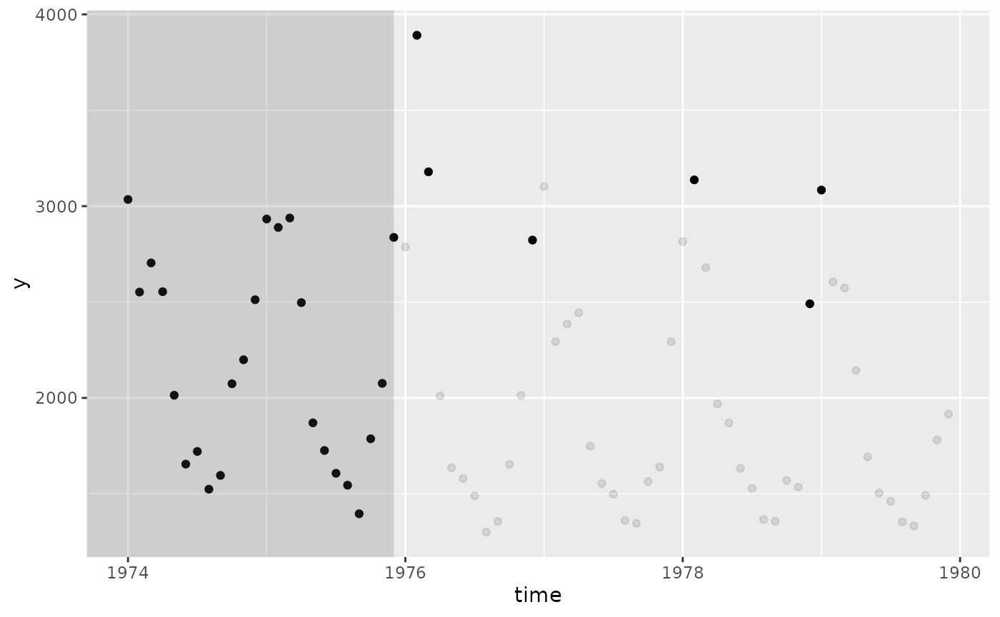

Introduction
The novel algorithm utilizes a hierarchical generalized linear model as a modeling framework to model the count observations \(y\) and assess the unobserved random effects \(u\). These random effects are used directly in the detection algorithm to characterize an outbreak.
Applying the algorithm
To install ‘aeddo’, you can use the following command to obtain the development version from GitHub:
install.packages("devtools")
devtools::install_github("ssi-dk/aeddo")or from CRAN:
install.packages("aeddo")Now, the library is loaded, to expose the functions:
library(aeddo)
library(ggplot2)
#>
#> Attaching package: 'ggplot2'
#> The following object is masked from 'package:aeddo':
#>
#> autoplotIn this vignette, the ‘aeddo’ algorithm is applied to the Monthly Deaths from Lung Diseases in the UK (source: P. J. Diggle (1990) Time Series: A Biostatistical Introduction. Oxford, table A.3). The data set is accessible trough the ‘MASS’ R package
deaths <- MASS::deathsTo get an idea of how the monthly data looks like, it is visualized in the following figure
plot(deaths)Clearly, an annual seasonal component is seen in the data. Thus, a fixed-effects model incorporating seasonality using Fourier terms is hypothesized:
It is time to preprocess the data. First, the ‘ts’ object is broken down into a time stamp and observations. This is achieved partly through the ‘zoo’ R package:
# Extract timestamp
timestamp <- zoo::as.yearmon(
stats::time(deaths)
)
# ... and observations
observations <- c(deaths)Then, it is needed to compute the month within a year, \(m\), which is needed for the Fourier terms:
m <- as.integer(
format(timestamp, "%m")
)Now, it is bundled together in a data.frame:
# Bundle up in data.frame
processed_deaths <- data.frame(
time = timestamp,
y = observations,
n = 1,
m = m
)As there are no information available on the population sizes at the given time stamps, \(n\) is fixed at 1. For the purpose of this example, it is assumed that a rolling window of size 24 months is appropriate for the parameter estimation. Moreover, the disease threshold, \(U_{t_0}\) is based on the 90% quantile of the second-stage random effects distribution:
k <- 24
sig_level <- 0.9The ‘aeddo’ algorithm is applied to the data:
The aeddo package implements S3 methods
Among other things, the ‘aeddo’ R package incorporates S3 methods,
that allow for easy visualization of the outcome of the algorithm. This
includes an autoplot() function, but also a wrapper for the
autoplot function, plot(). One can use either:
autoplot(aeddo_results)or
plot(aeddo_results)
To visualize the results. Here, the circles inside the grey area represent the training observations, the dim circles after the training period represents observations within the expected range, and the full opacity circles after the training period represents outbreak-related observations. Hence, there are found 6 outbreak-related observations in the data set.
Formulation of the hiearchical generalzied linear model
The hierarchical generalized linear model used by the novel outbreak detection algorithm is formulated as a hierarchical Poisson Gamma model. This section present the derivation of the marginal distribution of \(Y\) along with the joint likelihood function for the first and second stage models. For reference on hierarchical models, see Henrik Madsen and Poul Thyregod (2011), ISBN: 9781420091557.
In the compound Poisson Gamma model the conditional distribution of the count observations are assumed to be a Poisson distribution with intensities \(\lambda\)
\[\begin{equation} f_{Y|u}(y;u,\beta)=\frac{(\lambda u)^{y}}{y!}\exp(-\lambda u) \end{equation}\]
The probability density function for the random effects \(u\) are assumed to follow a reparametrized Gamma distribution with mean \(1\), \(u \sim \mathrm{G}(1/\phi,\phi)\) that is
\[\begin{equation} f_{u}(u;\phi)=\frac{1}{\phi \Gamma(1/\phi)} \bigg(\frac{u}{\phi}\bigg)^{1/\phi-1} \exp (-u/\phi) \end{equation}\]
Subsequently, the model can be formulated as a two-level hierarchical model
The probability function for the marginal distribution of \(Y\) is determined from
\[\begin{equation} \begin{aligned} g_{Y}(y;\beta,\phi)&=\int_{u=0}^\infty f_{Y|u}(y;u,\beta) f_{u}(u;\phi) \,du \\ &=\int_{u=0}^\infty \frac{(\lambda u)^y}{y!} \exp (-\lambda u) \frac{1}{\phi \Gamma(1/\phi)} \bigg(\frac{u}{\phi}\bigg)^{1/\phi-1} \exp (-u /\phi) \,du\\ &=\frac{\lambda^{y}}{y!\Gamma(1/\phi)\phi^{1/\phi}} \int_{u=0}^\infty u^{y+1/\phi-1} \exp \big(-u(\lambda \phi+1)/\phi\big) \,du \end{aligned} \end{equation}\]
It is noted that the integrand is the kernel in the probability density function for a Gamma distribution, \(\mathrm{G}\big(y+1/\phi,\phi/(\lambda \phi+1)\big)\). As the integral of the density shall equal one, it is found by adjusting the norming constant that
\[\begin{equation} \int_{u=0}^\infty u^{ y+ 1/\phi-1} \exp \Big(- u/\big(\phi/( \lambda \phi+1)\big)\Big) \,du = \frac{\phi^{ y+ 1/\phi}\Gamma( y+ 1/\phi)}{( \lambda \phi + 1)^{y+1/\phi}} \end{equation}\]
Therefore, it is shown that the marginal distribution of \(Y\) is a Negative Binomial distribution, \(Y\sim\mathrm{NB}\big(1/\phi,1/(\lambda\phi+1)\big)\). The probability function for \(Y\) is
\[\begin{equation} \begin{aligned} P[Y=y]&=g_{Y}(y; \beta, \phi) \\ &=\frac{\lambda^{y}}{y!\Gamma(1/\phi)\phi^{1/\phi}}\frac{\phi^{y+1/\phi}\Gamma(y+1/\phi)}{(\lambda \phi + 1)^{y+1/\phi}} \\ &=\frac{\Gamma(y+1/\phi)}{\Gamma(1/\phi)y!}\frac{1}{(\lambda\phi+1)^{1/\phi}}\bigg(\frac{\lambda\phi}{\lambda\phi+1}\bigg)^{y} \\ &=\begin{pmatrix} y+1/\phi-1 \\ y \end{pmatrix} \frac{1}{(\lambda\phi+1)^{1/\phi}}\bigg(\frac{\lambda\phi}{\lambda\phi+1}\bigg)^{y} \ , \quad \mathrm{for} \ y = 0, 1, 2, \dots \end{aligned} \end{equation}\]
where the following convention is used
\[\begin{equation} \begin{pmatrix} z\\y \end{pmatrix} = \frac{\Gamma(z+1)}{\Gamma(z+1-y)y!} \end{equation}\]
for \(z\) real and \(y\) integer values. Consequently, the mean and variance of \(Y\) are given by
\[\begin{equation} \mathrm{E}[Y] = \lambda \qquad \mathrm{V}[Y] = \lambda (\lambda \phi + 1) \end{equation}\]
The joint likelihood function for estimating \((\beta,\phi)\) is
\[\begin{equation} L( \beta, \phi; y_{it})=\prod_{t=1}^{T}\prod_{i=1}^{m} \begin{pmatrix} y_{it}+1/\phi-1 \\ y_{it} \end{pmatrix} \frac{1}{(\lambda_{it}\phi+1)^{1/\phi}}\bigg(\frac{\lambda_{it}\phi}{\lambda_{it}\phi+1}\bigg)^{y_{it}} \end{equation}\]
Inference on individual groups
Consider the compound Poisson Gamma model, and assume that a value \(Y=y\) has been observed.
The conditional distribution of \(u\) for given \(Y=y\) is found using Bayes Theorem. In order to simplify the notation, the subscript indicating the group and time are omitted. \[\begin{equation} \begin{aligned} g_{u}(u|Y=y)&=\frac{f_{y,u}(y,u)}{g_Y(y;\lambda, \phi)} \\ &=\frac{f_{y|u}(y;u)g_{u}(u)}{g_{Y}(y;\lambda,\phi)} \\ &=\frac{1}{g_{Y}(y;\lambda,\phi)}\Bigg(\frac{(\lambda u)^y}{y!} \exp (-\lambda u) \frac{1}{\phi \Gamma(1/\phi)} \bigg(\frac{u}{\phi}\bigg)^{1/\phi-1} \exp (-u/\phi)\Bigg) \\ &\propto u^{y+1/\phi-1} \exp \big(- u(\lambda\phi+1)/\phi\big) \end{aligned} \end{equation}\]
Here, the of the probability density function is identified
\[\begin{equation} u^{y+1/\phi-1} \exp (- u(\lambda\phi+1)/\phi) \end{equation}\]
as the kernel of a Gamma distribution, \(\mathrm{G}(y+1/\phi,\phi/(\lambda\phi+1))\), i.e. the conditional distribution of \(u\) for given \(Y=y\) can be written as
\[\begin{equation} u| Y=y\sim \mathrm{G}\big(y+1/\phi,\phi/(\lambda \phi+1)\big) \end{equation}\]
The mean of the conditional distribution is given by:
\[\begin{equation} \mathrm{E}[u|Y=y]=\frac{y\phi+1}{\lambda \phi+1} \end{equation}\]
And the variance of the conditional distribution is:
\[\begin{equation} \mathrm{V}[u|Y=y]=\frac{( \phi^2+\phi)}{(\lambda \phi + 1)^2} \end{equation}\]
These formulas provide the mean and variance of the conditional distribution of \(u\) given the observed value \(Y=y\).
The rationale for employing the Gamma distribution as a second stage model
The choice of the Gamma distribution for modeling the random effects has been motivated by several reasons. Firstly, the support of the Gamma distribution, which ranges from 0 to infinity, aligns with the mean-value space, denoted as \(\mathcal{M}\), for the Poisson distribution. This ensures that the random effects are constrained within a meaningful range for the underlying Poisson process.
Secondly, the two-parameter family of Gamma distributions offers considerable flexibility, encompassing a wide range of shapes and distributions that can span from exponential-like distributions to fairly symmetrical distributions on the positive real line. This flexibility allows the model to capture various patterns and characteristics observed in the data.
Additionally, the choice of the Gamma distribution has benefits in terms of the derivation of the marginal distribution of the response variable \(Y\). The kernel \(u^{\alpha-1}\exp(-u/\beta)\) of the Gamma distribution used for modeling the random effects exhibits a similar structure to the kernel \(u^y\exp(-u)\) of the likelihood function corresponding to the sampling distribution of \(Y\). This similarity facilitates the analytical computation of the integral involved in deriving the marginal distribution, as it can be expressed in terms of known functions.
Overall, the Gamma distribution is selected due to its alignment with the mean-value space of the Poisson distribution, its flexibility in capturing diverse distributions, and its analytical convenience in computing the marginal distribution of the response variable.
The three steps of the algorithm
The first step involves fitting either a Poisson Gamma model with a log link to the reference data. Here, it is possible to include an arbitrary number of covariates by supplying a model formula. In order to account for structural changes in the time series, e.g. an improved and more sensitive diagnostic method or a new screening strategy at hospitals, a rolling window with width \(k\) is used to estimate the time-varying model parameters. Also, it is assumed that the count is proportional to the population size \(n\). Hence in terms of the canonical link the model for the fixed effects is
\[\begin{equation} \log(\lambda_{it}) = x_{it}\beta + \log(n_{it}), \quad i=1,\dots,m, \quad t=1,\dots,T \end{equation}\]
Here \(x_{it}\) and \(\beta\) are \(p\)-dimensional vectors of covariates and fixed effects parameters respectively, where \(p\) denotes the number of covariates or fixed effects parameters, \(m\) denotes the number of groups, and \(T\) denotes the length of the period.
In the second step of the algorithm, as a new observation becomes available, the algorithm infers the one-step ahead random effect \(u_{it_1}\) for each group using the obtained model estimates \(\theta_{t_0}\). Here, \(t_0\) represents the current time point, and \(t_1\) represent the one-step ahead time points. The threshold \(U_{t_0}\) for detecting outbreak signals is defined as a quantile of the distribution of random effects in the second stage model. This threshold is calculated based on a Gamma distribution using the plug-in estimate \(\hat{\phi}_{t_0}\).
In the final step, the inferred random effect \(\hat{u}_{it_1}\) is compared to the upper bound \(U_{t_0}\), and an alarm is raised if \(\hat{u}_{it_1}>U_{t_0}\). If an outbreak is detected, the related observation \(y_{it_1}\) is omitted from the parameter estimation in the future. Thus, resulting in a smaller sample size for the rolling window until that specific observation is discarded.